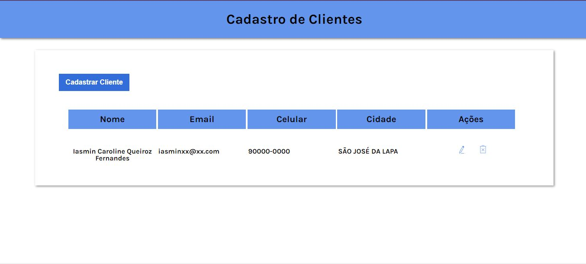

15 de Maio de 2023
Projeto Cadastro de Clientes

Este é um projeto para cadastro de clientes e banco de dados.
Foi realizado com as ferramentas HTML, CSS e JavaScript.
Conta com as funcionalidades: Adicionar os dados do cliente, editar e
apagar.
Este projeto tem como objetivo: o aprendizado profissional e captação
de clientes.